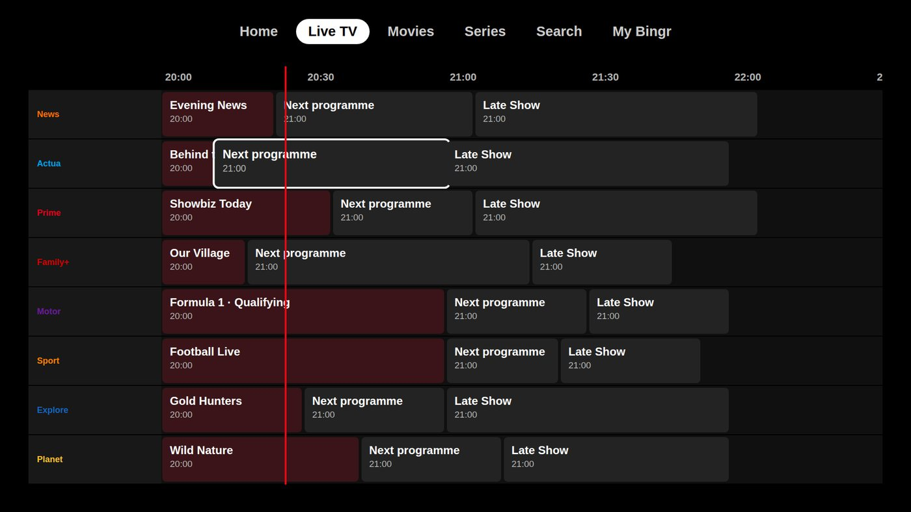
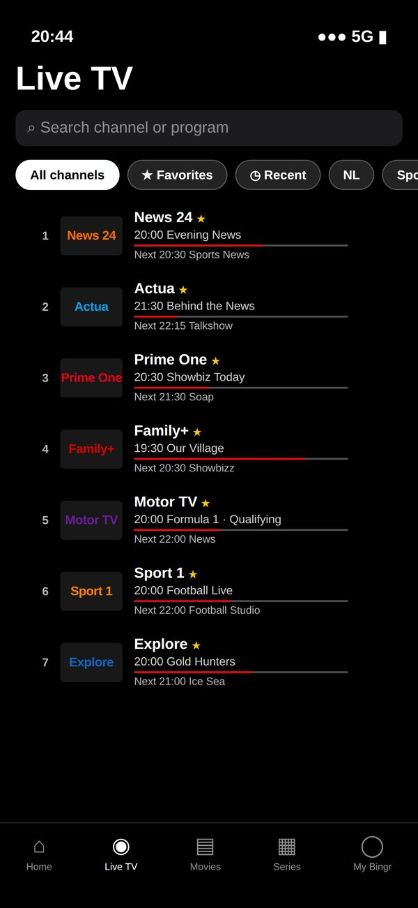
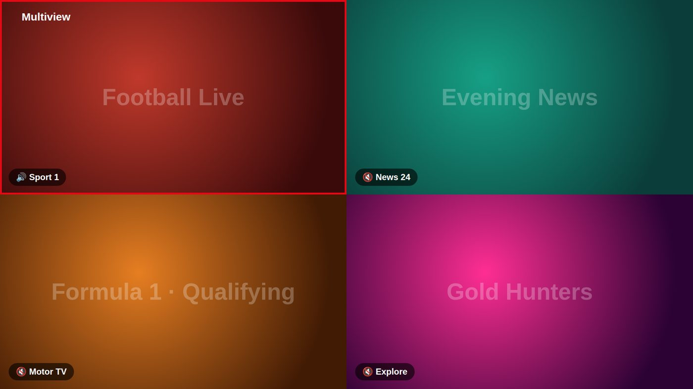
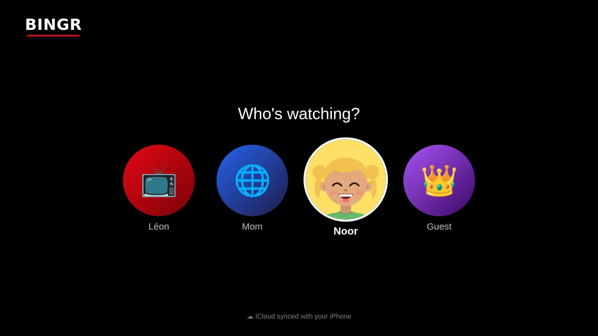

IPTV-app voor iPhone, iPad, Apple TV en Mac
Bingr speelt je eigen IPTV-abonnement af in een app die aanvoelt als Netflix: live tv met tv-gids, films en series in overzichtelijke rijen, en een eigen profiel voor iedereen in huis. Eén gratis account voor al je Apple-apparaten.
Stand van zaken: Bingr staat in de App Store voor iPhone en iPad; voor Apple TV en Mac is er de bèta via TestFlight. In je browser kun je ook meteen kijken.
Bingr levert geen zenders. Bingr is alleen de speler. Je zenders, films en series komen van je eigen IPTV-abonnement, afspeellijst of mediaserver (Plex, Jellyfin of Emby). Bingr verkoopt geen abonnementen en raadt geen aanbieders aan.


Wat Bingr doet, en wat niet
IPTV is televisie via internet. Je aanbieder geeft je een login voor een server of een link naar een afspeellijst; een IPTV-app maakt daar iets kijkbaars van. Dat is precies wat Bingr doet: je zenders krijgen een tv-gids, je films en series krijgen posters, beschrijvingen, scores en trailers, en alles staat in rijen zoals je dat van streamingdiensten kent, met een Top 10, Verder kijken en Mijn lijst.
Wat Bingr niet doet: zenders of films leveren. Er zit geen content in de app en we verkopen geen IPTV-abonnementen. Gebruik Bingr alleen met bronnen waarvoor je het recht hebt om ze te bekijken.
Op welke Apple-apparaten werkt Bingr?
- iPhone met iOS 17 of nieuwer
- iPad met iPadOS 17 of nieuwer
- Apple TV met tvOS 17 of nieuwer: de Apple TV HD en alle Apple TV 4K-modellen. Bediening met de Siri Remote: klikken voor de bediening, links en rechts om 10 seconden te spoelen, omhoog en omlaag om te zappen.
- Mac met macOS 14 of nieuwer, met Apple silicon of Intel. Een echte Mac-app, met sneltoetsen: spatie om te pauzeren, pijltjes om te spoelen en te zappen.
Bingr is er in elf talen, waaronder Nederlands en Engels, en volgt de taal van je apparaat. Heb je ook Android in huis of kijk je op een computer zonder app? Dezelfde account werkt op Android, Android TV, Google TV, Fire TV, Windows en in je browser.
Wat zit erin
De functies die het verschil maken als je elke dag live tv, films en series kijkt.
Xtream Codes, M3U en meer
Log in met je Xtream Codes-gegevens, plak een M3U- of M3U8-link of gebruik een MAC-portal. Heb je een eigen mediaserver, dan werken Plex, Jellyfin, Emby, Stremio en mappen op je NAS ook. Zo voeg je ze toe
Tv-gids (EPG)
Een raster met een nu-lijn, programma-informatie en herinneringen. De gids komt van je Xtream-server of uit een XMLTV-bestand, en je zoekt er ook in: wat speelt er nu, straks of wat kun je terugkijken.
Terugkijken en live terugspoelen
Ondersteunt je server catch-up, dan start je een gemist programma gewoon vanuit de gids. Live tv pauzeer je en spoel je terug, met één knop terug naar live.
Multiview
Tot vier streams naast elkaar: voetbal, nieuws en de Formule 1 tegelijk. Jij kiest welk beeld geluid geeft. Voor Bingr telt Multiview als één stream; je aanbieder ziet wel elk beeld als een eigen verbinding.
Profielen en kinderprofiel
Iedereen een eigen Mijn lijst, Verder kijken en kijkgeschiedenis, met een pincode per profiel. Een kinderprofiel toont alleen kinderzenders, tekenfilms en titels binnen de leeftijdsgrens.
Alles synchroon
Je servers, profielen, Mijn lijst, voortgang en instellingen horen bij je Bingr-account. Begin op je iPhone, kijk verder op de Apple TV of Mac. Wachtwoorden van je servers worden versleuteld bewaard.
Apple TV koppelen met een QR-code
Geen wachtwoord typen met de afstandsbediening: scan de QR-code op je tv met je telefoon, of vul de code in op bingr.online/koppelen. De tv is meteen ingelogd.
Twee spelers in één app
De Apple-speler voor HLS en MP4 met HDR, Dolby Vision en Dolby Atmos, en VLC voor .ts, .mkv, AC3 en DTS. Bingr kiest zelf, of je stelt het in. Met AirPlay, Chromecast en beeld-in-beeld.
Trakt
Wat je kijkt gaat vanzelf naar Trakt, en wat je elders al zag krijgt in Bingr een vinkje. Je Trakt-watchlist loopt mee in Mijn lijst.


Zo begin je
- Maak een gratis Bingr-account met je e-mailadres en een wachtwoord.
- Download Bingr in de App Store op je iPhone of iPad, of installeer op Apple TV en Mac TestFlight en open de bèta-uitnodiging. Log daarna in.
- Voeg met het hoofdprofiel je server toe: Xtream Codes, M3U of een MAC-portal. Stap voor stap uitgelegd.
- Maak profielen voor de rest van het huis. Op je andere apparaten log je in met hetzelfde account en staat alles meteen klaar.
Gratis of Lifetime
De app is gratis: 1 scherm tegelijk, 8 apparaten en 1 server, met alle kijkfuncties, profielen en de tv-gids. Met Lifetime betaal je één keer € 4,99 voor tot 3 schermen tegelijk, 15 apparaten, onbeperkt servers, statistieken, Nu aan het kijken, de Trakt-koppeling en thema's. Betalen kan binnenkort.
Hoeveel je tegelijk kunt kijken, hangt ook af van je IPTV-aanbieder: Bingr laat er zoveel toe als je abonnement bij Bingr, maar je aanbieder bepaalt hoeveel verbindingen jouw abonnement daar heeft.
Veelgestelde vragen
Is de IPTV-app van Bingr gratis?
Staat Bingr in de App Store?
Werkt Bingr op mijn oudere Apple TV?
Hoeveel streams kan ik tegelijk kijken?
Kan ik met Bingr opnemen?
Werkt Bingr ook op Android en in de browser?
Meer over Bingr
IPTV app for iPhone, iPad, Apple TV and Mac
Bingr plays your own IPTV subscription in an app that feels like Netflix: live TV with a TV guide, movies and series in clear rows, and a profile for everyone at home. One free account for all your Apple devices.
Where things stand: Bingr is in the App Store for iPhone and iPad; for Apple TV and Mac there's the beta via TestFlight. You can also watch right away in your browser.
Bingr doesn't provide channels. Bingr is only the player. Your channels, movies and series come from your own IPTV subscription, playlist or media server (Plex, Jellyfin or Emby). Bingr doesn't sell subscriptions or recommend providers.


What Bingr does, and what it doesn't
IPTV is television over the internet. Your provider gives you a login for a server or a link to a playlist, and an IPTV app turns that into something watchable. That's exactly what Bingr does: your channels get a TV guide, your movies and series get posters, descriptions, ratings and trailers, and everything sits in rows like you know from streaming services, with a Top 10, Continue watching and My List.
What Bingr doesn't do: provide channels or movies. There's no content in the app, and we don't sell IPTV subscriptions. Only use Bingr with sources you have the right to watch.
Which Apple devices does Bingr run on?
- iPhone with iOS 17 or later
- iPad with iPadOS 17 or later
- Apple TV with tvOS 17 or later: the Apple TV HD and all Apple TV 4K models. Control it with the Siri Remote: click for the controls, left and right to skip 10 seconds, up and down to zap.
- Mac with macOS 14 or later, Apple silicon or Intel. A real Mac app with keyboard shortcuts: space to pause, arrow keys to skip and zap.
Bingr comes in eleven languages, including Dutch and English, and follows your device's language. Also using Android, or watching on a computer without the app? The same account works on Android, Android TV, Google TV, Fire TV, Windows and in your browser.
What's inside
The features that make the difference when you watch live TV, movies and series every day.
Xtream Codes, M3U and more
Sign in with your Xtream Codes details, paste an M3U or M3U8 link or use a MAC portal. Got your own media server? Plex, Jellyfin, Emby, Stremio and folders on your NAS work too. How to add them
TV guide (EPG)
A grid with a now-line, programme details and reminders. The guide comes from your Xtream server or an XMLTV file, and it's searchable: what's on now, later, or what you can catch up on.
Catch-up and live rewind
If your server supports catch-up, you start a missed programme straight from the guide. Pause and rewind live TV, with one button to jump back to live.
Multiview
Up to four streams side by side: football, news and Formula 1 at the same time. You choose which picture plays sound. Bingr counts Multiview as one stream; your provider does see each picture as its own connection.
Profiles and kids profile
Everyone gets their own My List, Continue watching and history, with a PIN per profile. A kids profile only shows kids channels, cartoons and titles within the age limit.
Everything in sync
Your servers, profiles, My List, progress and settings belong to your Bingr account. Start on your iPhone, carry on on the Apple TV or Mac. Your server passwords are stored encrypted.
Link your Apple TV with a QR code
No typing passwords with the remote: scan the QR code on your TV with your phone, or enter the code at bingr.online/koppelen. The TV is signed in right away.
Two players in one app
Apple's player for HLS and MP4 with HDR, Dolby Vision and Dolby Atmos, and VLC for .ts, .mkv, AC3 and DTS. Bingr picks one, or you choose. With AirPlay, Chromecast and picture-in-picture.
Trakt
What you watch is sent to Trakt automatically, and what you've seen elsewhere gets a checkmark in Bingr. Your Trakt watchlist shows up in My List.


How to get started
- Create a free Bingr account with your email address and a password.
- Download Bingr from the App Store on your iPhone or iPad, or on Apple TV and Mac install TestFlight and open the beta invitation. Then sign in.
- Add your server with the main profile: Xtream Codes, M3U or a MAC portal. Explained step by step.
- Create profiles for the rest of the household. On your other devices you sign in with the same account and everything is ready.
Free or Lifetime
The app is free: 1 screen at a time, 8 devices and 1 server, with every viewing feature, profiles and the TV guide. With Lifetime you pay €4.99 once for up to 3 screens at once, 15 devices, unlimited servers, statistics, Watching now, the Trakt integration and themes. Payment will be available soon.
How many you can watch at once also depends on your IPTV provider: Bingr allows as many as your Bingr plan, but your provider decides how many connections your subscription has there.